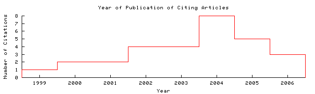

Dekang Lin  Home/Search
Context Related Home/Search
Context Related
| cs.umanitoba.ca/pub/lindek/...sim.ps.gz Cached: PS.gz PS PDF This document uses CoBlitz
to cache paper downloads. If your firewall is blocking outgoing
connections to port 3125, you can use these links to download local
copies.
Image Update HelpPS.gz PS PDF From: cs.umanitoba.ca/~li...publication (more) (Enter author homepages) |
Rate this article:      (best) (best)Comment on this article |
Abstract: Similarity is an important and widely used concept. Previous definitions of similarity are tied to a particular application or a form of knowledge representation. We present an informationtheoretic definition of similarity that is applicable as long as there is a probabilistic model. We demonstrate how our definition can be used to measure the similarity in a number of different domains. (Update)
Cited by: More
Exploring the Potential of Semantic Relatedness in.. - Müller, Gurevych (Correct)
Autoseek - Towards A Fully Automated Video Search System - Huurnink (2005) (Correct)
Thinking Beyond the Nouns -- Computing Semantic Relatedness .. - Iryna Gurevych Eml (2006) (Correct)
Active bibliography (related documents): More All
0.6: Automatic Retrieval and Clustering of Similar Words - Lin (1998) (Correct)
0.2: Ontology-Based Feature Transformations: - Data-Driven Approach Filip (Correct)
0.1: Semantic Similarity in a Taxonomy: An Information-Based Measure.. - Resnik (1999) (Correct)
Similar documents based on text: More All
0.1: Software Reuse and Reusability Metrics and Models - Frakes, Terry (1996) (Correct)
0.1: SpamCop: A Spam Classification & Organization Program - Pantel, Lin (1998) (Correct)
0.1: Using Collocation Statistics in Information Extraction - Dekang Lin (1998) (Correct)
Related documents from co-citation: More All
16: Using information content to evaluate semantic similarity in a taxonomy - Resnik
13: Semantic similarity based on corpus statistics and lexical taxonomy (context) - Jiang, Conrath - 1997
9: Semantic similarity in a taxonomy: An information-based measure and its applicat.. - Resnik - 1999
BibTeX entry: (Update)
D. Lin, "An information-theoretic definition of similarity," in International Conference on Machine Learning, 1998. http://citeseer.ist.psu.edu/95071.html More
@inproceedings{ lin98informationtheoretic,
author = "Dekang Lin",
title = "An information-theoretic definition of similarity",
booktitle = "Proc. 15th International Conf. on Machine Learning",
publisher = "Morgan Kaufmann, San Francisco, CA",
pages = "296--304",
year = "1998",
url = "citeseer.ist.psu.edu/95071.html" }
Citations (may not include all citations):2319 Elements of information theory (context) - Cover, Thomas - 1991
1543 Probabilistic Reasoning in Intelligent Systems: Networks of .. (context) - Pearl - 1988
503 Instance-Based Learning Algorithms (context) - Aha, Kibler et al. - 1991
269 Toward Memory-based Reasoning (context) - Stanfill, Waltz - 1986
181 WordNet: An on-line lexical database (context) - Miller - 1990
168 Distributional Clustering of English Words - Pereira, Tishby et al. - 1993
129 Representing and Reasoning with Probabilistic Knowledge (context) - Bacchus - 1988
117 Features of similarity (context) - Tversky - 1977
114 Using information content to evaluate semantic similarity in.. - Resnik
84 Noun classification from predicate-argument structures - Hindle - 1990
49 Overview of the first text retrieval conference (context) - Harman - 1993
45 Disambiguating noun groupings with respect to wordnet senses - Resnik
34 Contextual correlates of semantic similarity (context) - Miller, Charles - 1991
31 Generalizing automatically generated selectional patterns - Grishman, Sterling - 1994
24 Training and scaling preference functions for disambiguation - Alshawi, Carter - 1994
20 Experiments on linguistically based term associations (context) - Ruge - 1992
20 Verb semantics and lexical selection - Wu, Palmer - 1994
19 Principle-based parsing without overgeneration - Lin - 1993
18 Information retrieval based on conceptual distance in is-a h.. (context) - Lee, Kim et al. - 1989
10 Information Retrieval (context) - Frakes, BaezaYates - 1992
10 Principar---an efficient (context) - Lin - 1994
2 Random House College Thesaurus (context) - Stein, Flexner - 1984
1 Development and application ofa metric on semantic nets (context) - Rada, Mili et al. - 1989

The graph only includes citing articles where the year of publication is known.
Documents on the same site (http://www.cs.umanitoba.ca/~lindek/publication.htm): More
PRINCIPAR---An Efficient, Broad-coverage, Principle-based Parser - Dekang Lin (Correct)
Efficient Parsing for Korean and English: A Parameterized.. - Bonnie Dorr (1995) (Correct)
Extracting Collocations from Text Corpora - Lin (1998) (Correct)
Online articles have much greater impact More about CiteSeer.IST Add search form to your site Submit documents Feedback
CiteSeer.IST - Copyright Penn State and NEC